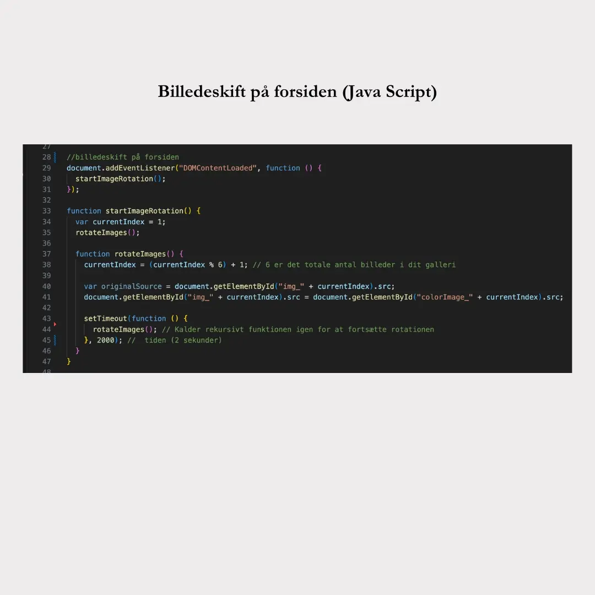
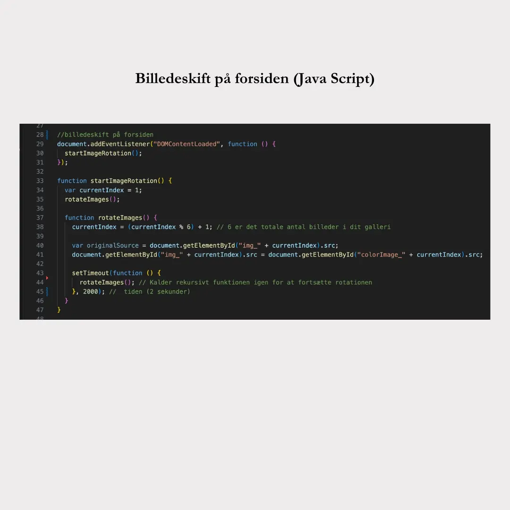

Følg med i min process nedenfor


Første step i min process har været at se på Pinterest og andre lignende websites.
Efterhånden kom jeg frem til en stil jeg gik med. Den tager meget udgangspunkt i min egen stil kombineret med brugervenlighed og brugerflows som jeg synes skaber et godt flow på en hjemmeside.
Jeg ønsker at vise, hvad jeg har arbejdet med det første semester på KEA. Formålet er at udtrykke min kreative sans og give et indblik i, hvem jeg er. Jeg vil demonstrere mine evner inden for HTML, CSS og JavaScript og design.
Jeg har i høj grad benyttet desk research til at strukturere mine sider.
Jeg har primært hentet inspiration fra tre websites.
For eksempel scrolle-effekten, hvor den ene side scroller mens den anden står fast: https://www.rudolphcare.com/da/om/om-rudolph-care/
Designet hvor der er sat en baggrundsfarve under billederne, for at få samme udtryk på alle mine undersider: https://www.lessestudio.com/portfolio/ace
Footeren som er stilren og enkel I designet: https://www.studioetta.co
Jeg har forsøgt at tilføre en personlig touch ved at inkludere billeder på forsiden fra mit personlige liv, som jeg mener beskriver mig godt.
Mit logo startede med at være et R tegnet i Illustrator, men det endte med at blive en delfin tegnet i Illustrator. Delfinen har altid været et kendetegn for mig lige siden jeg var helt lille og så synes jeg også den har en æstetisk form/stil.
Her ses hi-fi og lo-fi wireframes over det endelige site. De er blevet ændre en del undervejs eftersom jeg har taget tests på min hjemmeside.

 

Koden anvender JavaScript til at implementere billedeskift på forsiden. Når siden er indlæst, startes funktionen startImageRotation(). Den bruger en event listener til at kalde rotateImages(), som skifter mellem sort-hvide og farvede billeder i et galleri.
Billederne er placeret i to separate div-elementer med klassenavne "gallery" og "color-images". Hvert billede har sit eget id, som bruges til at identificere og manipulere dem i JavaScript-koden. Dermed starter den med det første sort-hvide billede og skifter derefter til det første farvebillede og fortsætter sådan.
Jeg har skjult sektionen med farvebilleder ved at anvende display: none; så de ikke er fremme hele tiden.
Den anden kode, jeg vil nævne, vedrører mine grids på undersiderne. Her har jeg to kolonner, hvor man i billedkolonnen kan scrolle nedad.
For at opnå dette har jeg anvendt overflow-y: auto; og max-height: 100vh;, så de kan scrolle, men ikke uendeligt
De første tests, jeg udførte i min proces, var primært 5-sekunders tests og tænke-højt-tests, hvilket resulterede i følgende ændringer:
Slideshowet øverst på alle sider skal nu have mulighed for, at brugeren selv kan scrolle i det, i stedet for at det kører automatisk.
På undersiderne skulle kategorierne og billederne være mere tydeligt opdelte, så jeg har tilføjet en baggrundsfarve til hver del.
På undersiderne, hvor man kan scrolle ned ved billederne, ønskede jeg tydeliggøre muligheden for at scrolle ned, da det nogle gange kunne overses. Derfor har jeg tilføjet en pil øverst, der indikerer dette.
Jeg udførte tænke-højt-tests med fire testpersoner, hvor de blev bedt om at løse følgende opgaver:
Alle løste opgaverne uden problemer.
Første testperson:
Anden testperson:
Tredje testperson: